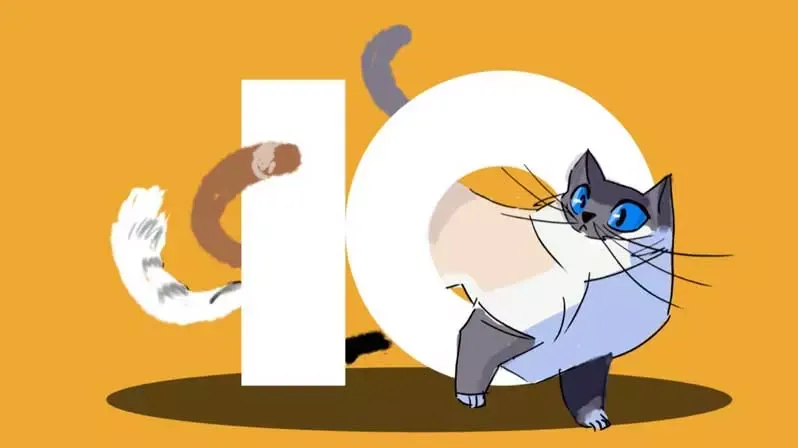

10 oblíbených plemen koček: kterou si vybrat?
Mainská mývalí, perská, ragdoll nebo kočka z útulku? Přehled povahy a péče u deseti oblíbených koček.

Výběr kočky by měl odpovídat vaší povaze, bytu i rodině. Tady je deset oblíbených koček s tím nejdůležitějším o povaze a péči.
1. Kočka z útulku
Začínáme tou nejdůležitější. Útulky jsou plné koček všech povah a věků a pracovníci vám pomůžou vybrat tu, která k vám sedne. Dospělá kočka z útulku má navíc už „hotovou“ povahu, takže víte, do čeho jdete.
2. Mainská mývalí kočka
Největší domácí kočka: kocouři váží i přes 8 kg. Hravá, zvídavá a přátelská, dobře snáší děti i psy. Polodlouhou srst stačí česat jednou až dvakrát týdně.
3. Perská kočka
Klidná, mazlivá a ráda leží. Ideální do bytu. Dlouhá srst ale potřebuje denní česání, jinak se plstí. Kvůli ploššímu obličeji hlídejte čistotu očí.
4. Birma (posvátná barmská kočka)
Klidná a přítulná, s typickými bílými „ponožkami“. Má ráda pohodu a často si vybere jednoho člověka. Srst je méně náročná, než vypadá.
5. Siamská kočka
Nepřehlédnutelná povaha i vzhled. Aktivní, hravá a velmi „upovídaná“, Siamky nemňoukají, ale mluví. Potřebuje hodně pozornosti, krátká srst je nenáročná.
6. Kartouzská kočka
Modrošedá srst a měděné oči. Klidná, rodinná, ale nezávislá: přijde se mazlit, až sama chce. Při línání ji česejte častěji.
7. Ruská modrá
Elegantní a tichá kočka se stříbřitě modrou srstí. Plachá k cizím, ke své rodině velmi oddaná. Má ráda klid a pravidelný režim, péče je jednoduchá.
8. Habešská kočka
Vypadá jako malá puma a chová se jako sportovec: běhá, šplhá a všechno prozkoumá. Je velmi přítulná a potřebuje hodně zábavy a prostoru.
9. Ragdoll
Velká a mimořádně klidná kočka, která v náručí „povolí“ jako hadrová panenka, odtud její jméno. Je přítulná a chodí za svým člověkem. Hodí se do bytu.
10. Domácí kočka bez rodokmenu
Nejrozšířenější kočka u nás. Každá je originál: dobrý lovec, přizpůsobivá, mazlivá i nezávislá zároveň. Najdete ji v útulku i u sousedů.
Ať si vyberete kteroukoli, budete potřebovat kvalitní krmivo, škrabadlo a čistou toaletu. Hrudkující bentonitové stelivo vyhovuje kočkám s krátkou i dlouhou srstí, protože se nelepí na tlapky.